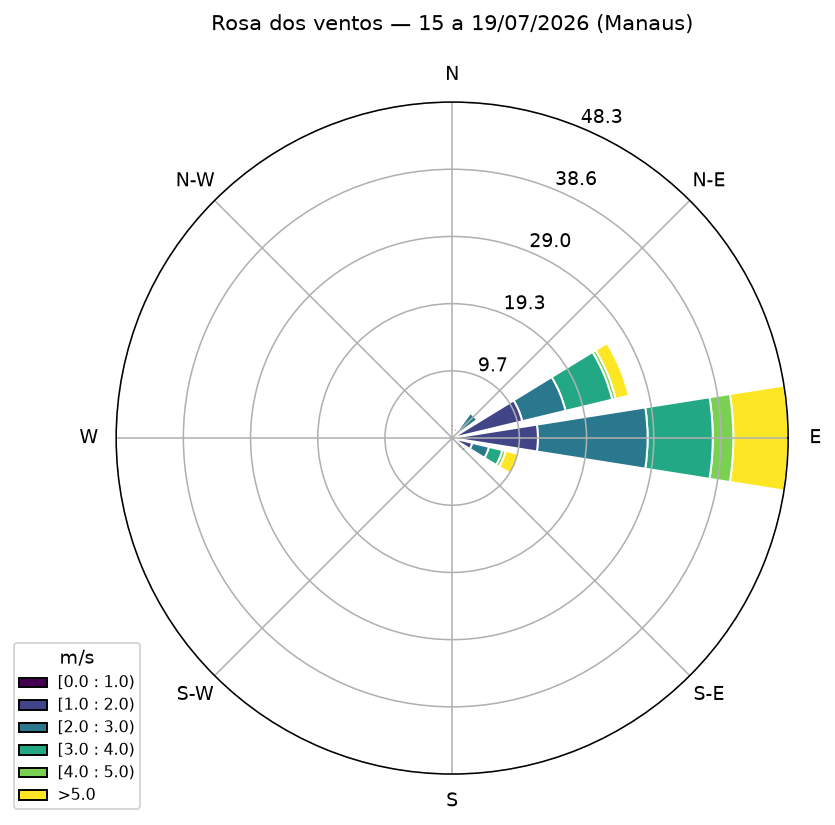
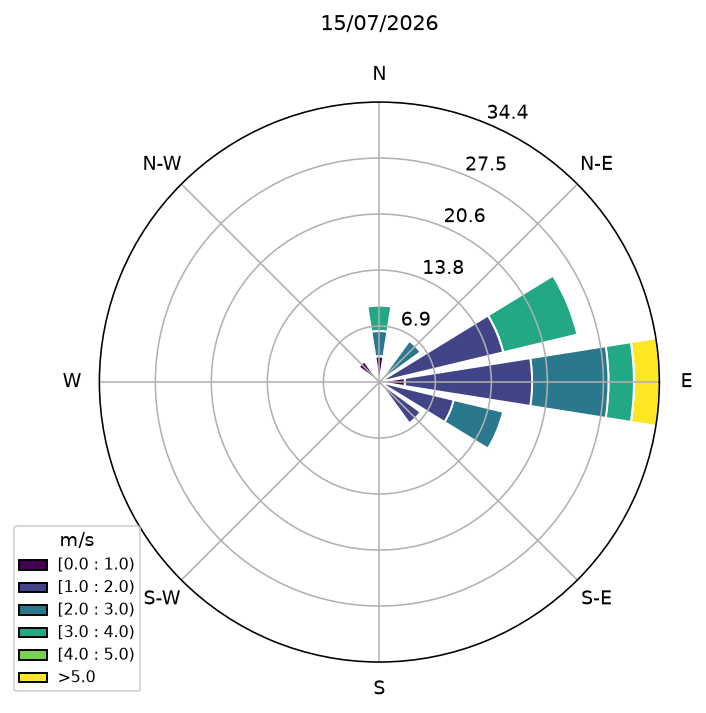
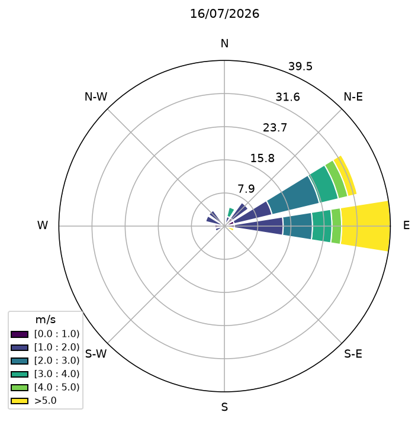
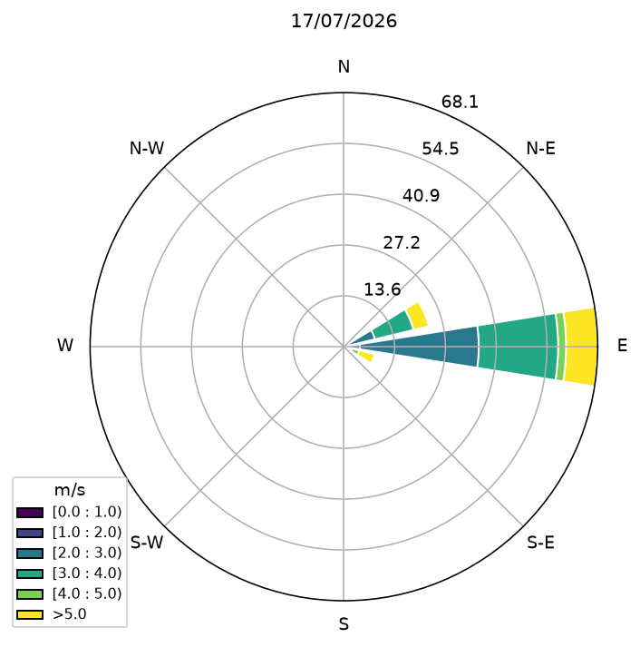
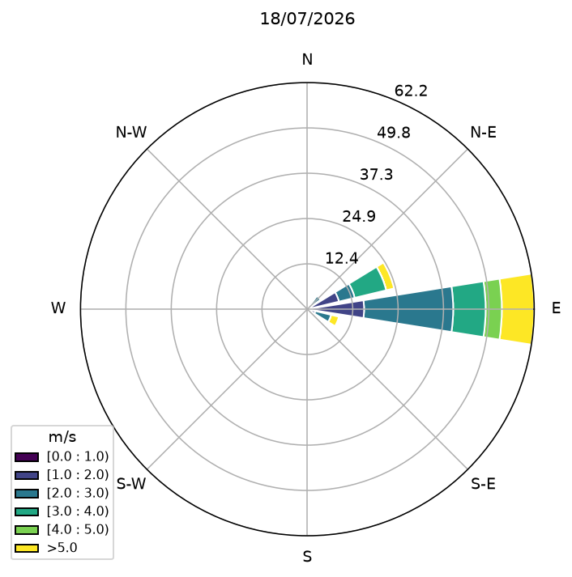
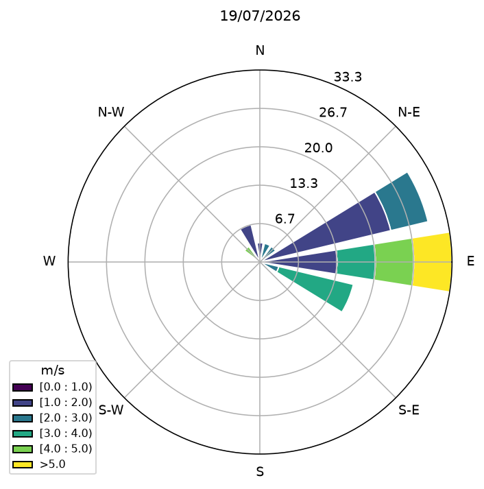
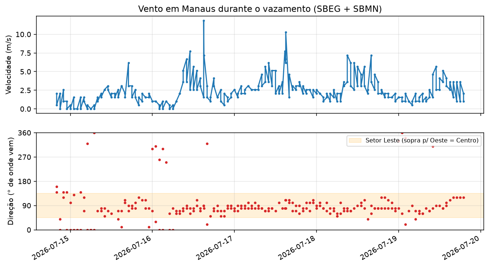
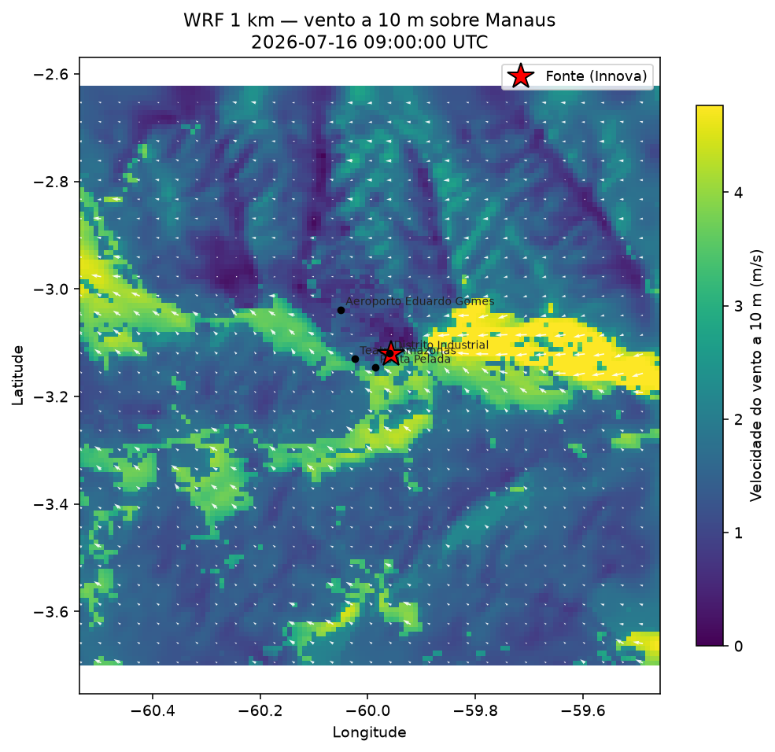
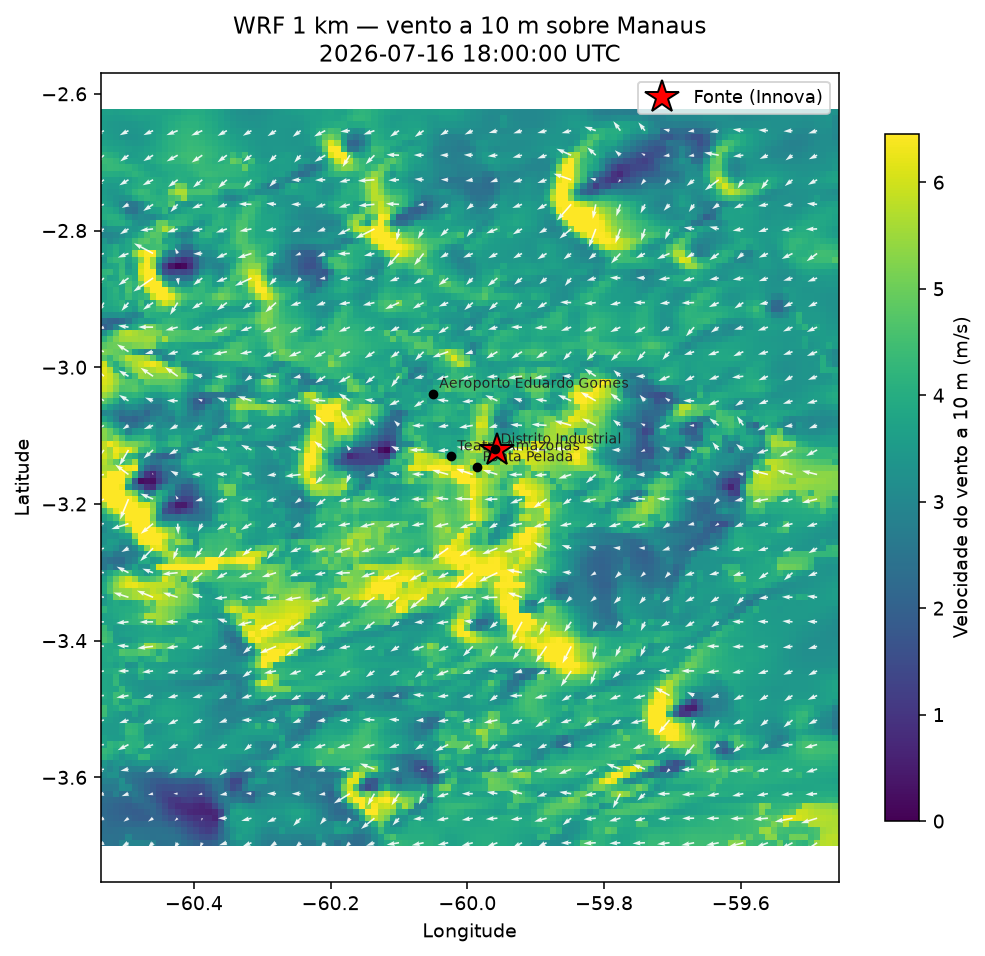

A meteorologia dos cinco dias
De onde veio o vento
O vento em Manaus foi reconstruído a partir de 243 observações METAR das estações SBEG (Aeroporto Eduardo Gomes) e SBMN (Ponta Pelada), obtidas do arquivo público da Iowa State University, para 15–19/07/2026.
Dois traços dominam o período:
- 87,2% das observações com direção definida têm vento vindo do setor leste (entre 45° e 135°), com direção mediana de 80°.
- O vento é fraco na média, cerca de 2,4 m/s, com períodos de quase calmaria.
O denominador merece ser declarado, porque a convenção do METAR o esconde. Das 243 observações, 25 não trazem direção e 15 registram 00000KT, que significa vento calmo com direção indefinida e não vento de norte. As 40 ficam fora do cálculo de direção, restando 203 observações com setor. Contadas sobre as 243, as do setor leste seriam 72,8% — número que dilui a predominância com observações que não têm setor algum.
Vento vindo de leste sopra para oeste, e é a oeste da fonte (Distrito Industrial) que ficam o Centro e o Teatro Amazonas, este último a 7,6 km. A circulação predominante empurrou a pluma na direção da cidade durante boa parte do evento.






A série temporal e o setor crítico
Na série abaixo, a faixa laranja marca o setor leste (45°–135°): sempre que a direção cai nessa faixa, o vento aponta para o Centro. A permanência nesse setor durante os cinco dias é o que sustenta os relatos difusos de odor.

Estabilidade atmosférica e o efeito de tampa
Além da direção, importa o grau de turbulência da atmosfera. Cada hora foi classificada nas classes de Pasquill-Gifford (A = muito instável … F = muito estável), a partir da velocidade do vento e da altura do Sol — não da hora do relógio. Cerca de 49% das horas caíram em classes estáveis (E/F).
Em condições estáveis a atmosfera funciona como uma tampa: a pluma dispersa pouco na vertical e viaja longe, concentrada, perto do solo. É o regime que maximiza o alcance do odor, e explica a maior frequência de percepção de cheiro de madrugada e no início da manhã.
Convém dizer com clareza o que esse número é. Das 243 observações, 120 têm o Sol abaixo do horizonte — exatamente 49,4% —, e a contagem de horas em classe E ou F é também 120. A coincidência não é acaso: nenhuma observação noturna do período tem vento igual ou superior a 5 m/s, que é o único caminho da tabela noturna de Turner para a classe D, e nenhuma observação diurna pode cair em E ou F por construção da tabela. Zero horas diurnas estáveis, zero horas noturnas neutras. Dizer que metade das horas foi estável equivale, nesta amostra, a dizer que metade das horas foi noite.
O teste de sensibilidade à cobertura de céu não altera essa constatação: a cobertura falta em 46% das observações e é tratada como céu claro, mas sob a hipótese oposta o percentual passaria de 49,4% para 47,7%, porque noite encoberta com vento fraco ainda cai em E, e não em D. O dado faltante afeta apenas o rótulo dentro do par E/F e, na tabela urbana de Briggs adotada aqui, E e F têm coeficientes idênticos: a distinção não altera as isopletas.
A informação meteorológica que sustenta o regime de transporte, portanto, não é o percentual — é o vento fraco e a estrutura vertical medida pelas radiossondagens, que independem da tabela de classificação. Onde o texto menciona classe F, o que o modelo enxerga é a condição estável.
Uma correção de método entrou nesta versão. A insolação era decidida pela hora do relógio, e não pela elevação solar: sete observações das 06 h locais, com o Sol 2,5° abaixo do horizonte, recebiam classe A, a mais instável da tabela. Com o critério por altura solar (forte acima de 60°, moderada de 35° a 60°, fraca de 15° a 35°, neutra abaixo de 15°), nenhuma classe instável ocorre com o Sol abaixo do horizonte e as trinta horas de crepúsculo passam a classe D.
Direção de leste, vento fraco e atmosfera estável compõem a combinação que favorece o transporte a longa distância. É sob esse regime que uma emissão modesta já basta para explicar odor a 15 km da fonte, como quantifica o modelo de pluma.
O campo de vento simulado a 1 km
O METAR fornece o vento em dois pontos (SBEG e SBMN) e o GFS de 27 km que alimenta as trajetórias fornece o vento regional. Entre essas duas escalas situa-se o campo de vento sobre a cidade inteira, resolvido a 1 km, obtido por downscaling dinâmico da reanálise ERA5 com o WRF (Weather Research and Forecasting); a configuração do modelo é descrita na página de dados e métodos.
Dois instantes do domínio de 1 km resumem o ciclo diurno.


Na célula da fonte (Innova), o campo de 1 km detalha o que o METAR mede em dois pontos afastados:
- Tarde: 4,4 m/s de 98° (leste-sudeste), transporte vigoroso para oeste, na direção do Centro.
- Madrugada: 1,0 m/s de 134° (sudeste), escoamento quase parado, girando com o relevo e os rios.
Da madrugada à tarde, a velocidade na fonte passa de 1,0 para 4,4 m/s e o rumo gira 36°, enquanto a média no domínio mais que dobra, de 1,8 para 3,9 m/s. Essa modulação diurna, somada à canalização noturna pelos rios, não é resolvida pela meteorologia de 27 km que alimenta as trajetórias, e é ela que dá suporte físico à percepção mais aguda de odor na madrugada: vento fraco, camada estável e escoamento canalizado mantêm o estireno concentrado e rente ao solo, drenando devagar pelos vales em vez de dispersar.
Discordância entre o campo simulado e a observação de superfície
A divergência mais consequente entre o campo simulado e o METAR está no rumo noturno, não na velocidade. As isopletas do modelo de pluma são desenhadas no rumo de 80°, a mediana do METAR, que projeta a pluma sobre o Centro. Na madrugada, porém, o campo de 1 km indica 134° na célula da fonte, rumo que levaria a pluma para 314°: a zona norte, na direção do aeroporto, e não do Teatro Amazonas.
A diferença é de 54°, e a pluma é estreita. A 15 km da fonte a largura característica vale apenas 624 m, enquanto os dois rumos separam os eixos por 13,6 km naquela distância — cerca de 22 larguras de pluma. Mesmo uma discordância de 20° já separaria os eixos por oito larguras. Não se trata de efeito de segunda ordem: é a maior incerteza do campo de concentração, superior à de qualquer termo da física do modelo.
As duas medidas são compatíveis entre si. O METAR de SBEG/SBMN é uma mediana de todas as horas, dominada pelo regime diurno de alísios, enquanto o rumo de 134° é especificamente noturno e local. A dificuldade é que o odor a 15 km é atribuído justamente à madrugada. O mapa de isopletas representa os dois rumos como uma cunha, e a região efetivamente afetada situa-se em algum ponto entre eles.
Há, porém, uma terceira medida, independente das duas e tomada na altura em que a pluma viaja: as radiossondagens lançadas de Ponta Pelada durante o episódio. A 100 m do solo, nas cinco noites do vazamento, elas indicam 96° ± 7° — a 16° do METAR e a 38° do campo simulado.
As mesmas sondagens permitem verificar o campo de 1 km na coluna da estação, nas cinco noites do vazamento. O erro mediano de rumo a 100 m é de 5°, com três noites dentro de 5° e duas em torno de 30°, sempre no sentido de um escoamento mais setentrional que o medido. O valor de 134° não é, portanto, viés sistemático de direção, e sim uma característica local e noturna da célula da fonte, em outra hora. A arbitragem, a verificação do campo simulado e o que permanece aberto estão na página das sondagens.
Campo de vento em escala de bairro
Sobre o mapa de ruas, a camada de velocidade da madrugada distingue os corredores fluviais das áreas em que o ar estagna, bairro a bairro.
Limitação. Um modelo não resolve estruturas do tamanho de sua célula: a menor escala efetivamente resolvida situa-se entre 4 e 7 vezes o espaçamento de grade (Skamarock, 2004), ou seja, 4 a 7 km para o campo de 1 km. Dentro dessa faixa estão a canalização pelo vale e o giro dia/noite, o elo que faltava entre os dois pontos do METAR e o transporte regional do HYSPLIT. Fora dela fica a concentração rua a rua, com esteiras entre edifícios, que exigiria simulação de grandes turbilhões (LES) ou fluidodinâmica computacional (CFD). Permanecem válidas, ainda, as ressalvas de gás neutro e de densidade de vapor 3,6 do modelo de pluma. O produto é meteorologia de alta resolução, não um laudo de rua.